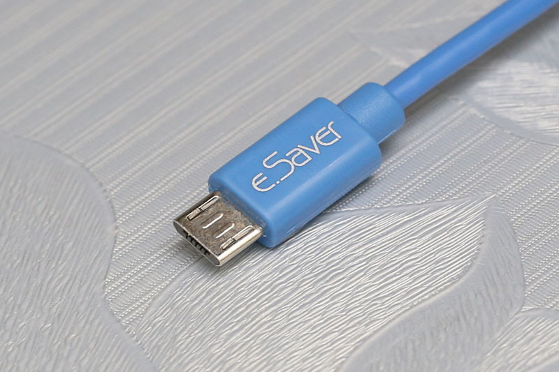
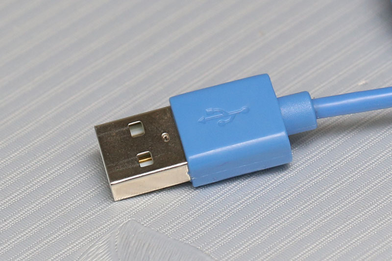
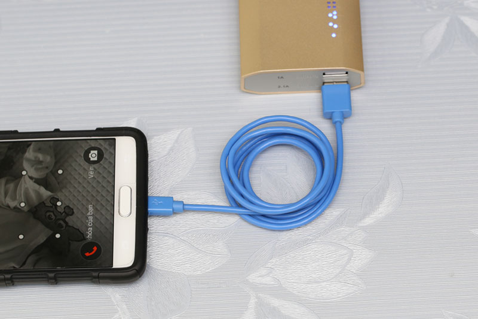
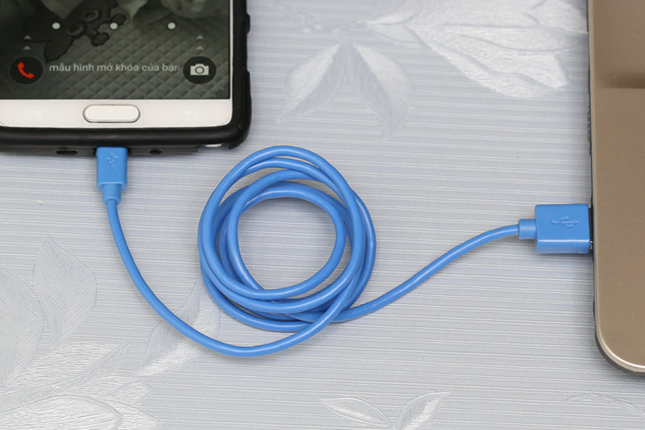

Kiểu dáng quen thuộc, dễ sử dụng
Cáp có phần đầu micro USB kết nối với hầu hết cổng điện thoại hiện nay; đầu cáp USB tương thích với mọi adapter hay cổng trên tivi, laptop, pin sạc.

Đầu cáp micro USB thông dụng trên các thiết bị

Đầu cáp USB cắm vào cổng USB trên laptop, pin sạc, adapter…
Sạc pin, truyền tải dữ liệu cho thiết bị (điện thoại, máy tính bảng…)
Cáp tương thích với hầu hết cổng trên smartphone hiện nay như Samsung, HTC, LG, Lumia, Oppo, Sony..

Đầu cáp USB cắm vào cổng USB trên laptop, pin sạc, adapter…

Đảm bảo kết nối ổn định giữa laptop với thiết bị